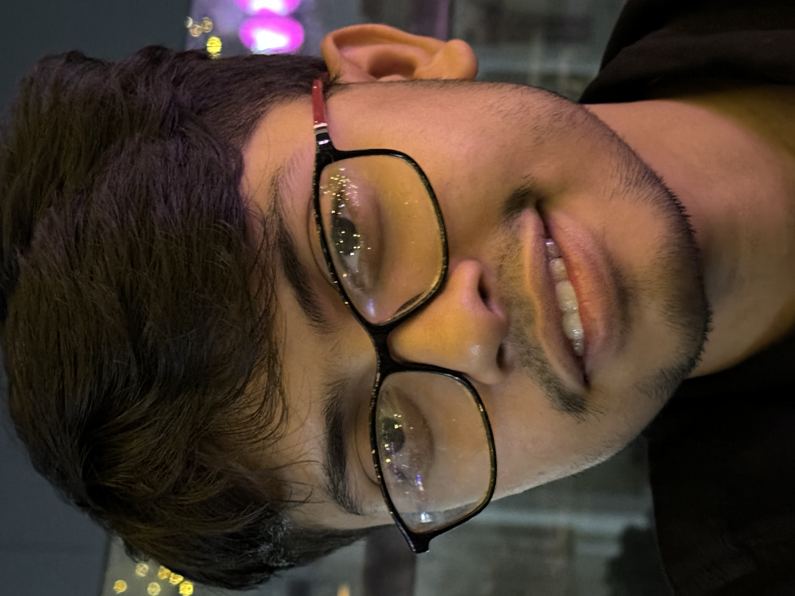

Snehashis Bose

Objective
Motivated computer science student with expertise in C, C++, Java, and embedded systems. Seeking an opportunity to apply my skills in software development, cybersecurity, and IoT while contributing to innovative projects and growing in the tech industry.
Education
- KIIT University, Bhubaneshwar (2022-2026)
- BTech in Computer Science and Engineering
- CGPA: 8.34
- DPS Ruby Park (2022)
- 12th Grade, Central Board of Secondary Education
- Percentage: 81.4
- South Point High School (2020)
- 10th Grade, Central Board of Secondary Education
- Percentage: 93.4
Work Experience
Projects Experience:
- Sanitary Pad Vending Machine (September 2023)
KIIT Robotics Society (KRS)
- Designed and developed an RFID-based vending machine with Arduino control systems
- Integrated Google Sheets API for user validation
- Water Level Detection System (April 2024)
- Developed using Arduino Uno, MyDAQ, and LabVIEW
- Created real-time monitoring system for water levels with LED indicators
Skills
- Programming Languages: C, C++, Java
- Developer Tools: VS Code, Linux Code, Eclipse IDE, Arduino IDE, LABView Software
- Technical Skills: Data Structures and Algorithms, Object Oriented Programming, Operating System, Database Management System, Basic Embedded System, IoT
- Areas of Interest: Cybersecurity, Android Development
- Languages: English, Hindi, Bengali
- Soft Skills: Fluent Technical Verbal and Written English, Leadership and Teamwork, Time Management, Problem Solving
Awards, Certifications, or Other Achievements
- Earned university scholarship by ranking among top 1000 students in entrance examination
Other